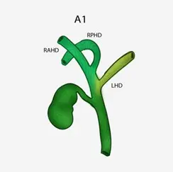
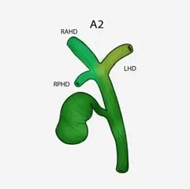
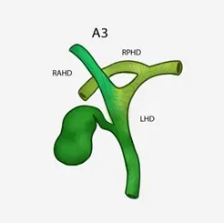
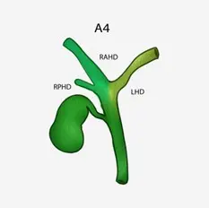
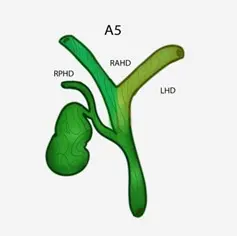

A1: El conducto hepático posterior derecho y el conducto hepático anterior derecho se unen para formar el conducto hepático derecho (RHD). Esta variación representa el 60,44% de los casos.

A2: El conducto hepático derecho está ausente. El conducto hepático posterior derecho, el conducto hepático anterior derecho y el conducto hepático izquierdo se unen para formar el conducto hepático común. Esta variación representa el 11,76% de los casos.

A3: El conducto hepático posterior derecho o el conducto hepático anterior derecho se conecta directamente con el conducto hepático izquierdo. Representan el 11,73% del total de casos.

A4: El conducto hepático posterior derecho o el conducto hepático anterior derecho se conecta directamente con el conducto hepático común. Esta variación representa el 5,47% de los casos.

A5: El conducto hepático posterior derecho se comunica con el conducto cístico o con su periferia de forma aberrante y otros (como la unión del conducto accesorio al conducto hepático común y al conducto hepático derecho). Esta variación representa el 0.26% de los casos.